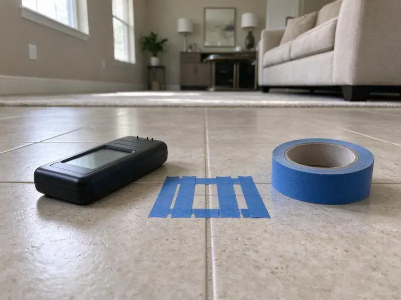

Residential Plumbing Service in Mentor, OH
Residential plumbing service in Mentor, OH that starts with a diagnosis, not a sales pitch. Most repairs wrap up within two or three hours.
- Same-Day Appointments Most Days
- Plumbers Who Work in Mentor
- Price Set Before Work
- Same-Day Home Repairs

Fix the Drip Before It Gets Worse in Mentor, OH.
Our trucks carry cartridges, flappers, valves and fittings, so most fixes happen on the first visit.
Residential Plumbing for Kitchens, Baths, Basements and Garages in Mentor, OH
Residential work is most of what we do. A service call might be a toilet that runs every twenty minutes, and the next is a water heater dripping from the relief valve onto the garage floor. We diagnose first and quote second.
Some of what we do:
- Drain cleaning by hand auger or jetter.
- Water Heater Installation to Code
- Leak detection with listening equipment and thermal imaging.

Additional Plumbing Maintenance Services in Mentor, OH
Our maintenance and specialty plumbing services in Mentor, OH catch small problems before they become emergencies.


Customers
Why Choose HRL Plumbing for Residential Plumbing Service in Mentor, OH?
A bad repair costs more than a good one, just later. We use brass and copper where it matters, not the cheapest plastic part that fits, because a failed fitting behind a vanity can soak a subfloor before anyone notices. Cheap parts fail early.
- Flat Pricing, The price is written down before work begins, and it does not change halfway through.
- Workmanship Warranty, Parts and labor are covered in writing on every repair.
- Licensed Plumbers, Every plumber holds the license Ohio requires and keeps up with code changes.
Citywide Coverage
Every neighborhood in Mentor is in our service area, from the older blocks near downtown to subdivisions still going up. The older parts of town bring galvanized supply lines and cast iron drains, while newer tracts bring PEX manifolds, tankless heaters and builder-grade valves that tend to fail around the ten-year mark. We stock for both.
Experienced Team
Every residential plumber on our team has hands-on years with both vintage galvanized and modern PEX manifolds. They are background checked and drug tested. They are trained to explain the problem plainly, without trade jargon, and to show you the failed part when there is one.
Safety-First Approach
Safety comes first on every call. We use proper venting, gas leak tests and listed materials, and the work meets or beats the standards inspectors use in Mentor, OH, which matters most on water heaters and gas lines where a mistake is dangerous. Shortcuts are not allowed.
Trusted Certified Mentor Plumbing Services Professionals
At HRL Plumbing, we take pride in licensed, certified plumbing services throughout Mentor, OH. Those papers on the wall mean something. Every repair, install and maintenance visit follows strict safety and quality rules, and the plumbers doing the work carry recognized industry credentials.
Call Us Now PHCC Plumbing Contractor Recognition
PHCC Plumbing Contractor Recognition Better Business Bureau (BBB) Accreditation
Better Business Bureau (BBB) Accreditation Angi Certified Pro
Angi Certified Pro ISO 9001 Quality Management Certification
ISO 9001 Quality Management CertificationResidential Plumbing Service in Mentor, OH: What We Fix
Pipe Repair and Repiping for Older Homes in Mentor, OH
Galvanized steel and polybutylene are the two pipes we replace most. Lead service lines remain in some older neighborhoods, and replacing them is a frequent recommendation during larger projects. Repipes are done in PEX or Type L copper, running new lines through the attic and walls with small access holes, and the water stays on at night for most of the job. Expect two to four days.

Pressure Regulators and Shutoff Valves in Mentor, OH
Water pressure over 80 psi wears out hoses and valves early. A gauge on the hose bib tells us your static pressure in a minute, and if it reads high we install or replace a pressure reducing valve and set it in the 50 to 70 psi range most fixtures are rated for. Seized main shutoffs get replaced too.
Drain Cleaning and Clog Clearing in Mentor, OH
Grease is the big one in kitchen lines. Bathroom drains clog with hair and soap scum, and we clear both with hand augers, sectional cable machines or a hydro jetter, depending on how far down the blockage sits and what the pipe is made of. A camera tells us if roots or a broken joint are behind a repeat clog.
Gas Lines for New Appliances in Mentor, OH
Switching from an electric range to gas means a new line and a shutoff. We size the pipe for the appliance's BTU load, run it in black iron or CSST, bond it where the code requires and pressure-test before the gas company or inspector signs off on the work. Then we light it and check the flame.
Emergency Home Plumbing Help in Mentor
A gas smell or sewage backup cannot wait until Monday. Our trucks carry enough parts to stop most emergencies on the first visit, and while the plumber is driving over, the dispatcher walks you through shutting off the water main or the gas valve at the meter. Shutting off quickly limits damage to floors and cabinets.
Leak Detection and Repair in Mentor, OH
Water stains on a ceiling rarely sit right under the leak. Tree roots and shifting clay often crack older clay or cast iron sewer laterals, leading to slow drains and backups. Our techs use acoustic sensors and thermal cameras, then isolate lines with pressure tests, which lets us open one small hole in the right spot instead of cutting drywall all over the house. Repairs follow the same day when possible.
Leak Repair and Slab Leak Service in Mentor
On a slab foundation, a supply leak can run for weeks unseen. Warm spots on tile, a meter that spins with every tap off or a water bill that doubles are the usual clues. We pinpoint it before quoting. Fixes range from a direct repair to rerouting the line overhead or a full repipe when leaks keep coming back.

Faucet, Toilet and Shower Valve Repair in Mentor, OH
Hard water chews through faucet cartridges and toilet fill valves. Shower valves get rebuilt, cartridges replaced and tub spout leaks sealed, and if a fixture is too corroded to save, we install the replacement and haul the old one away so it is not sitting in your garage. A slow drip still adds up on the bill.
Residential Plumbing Service Near Me in Mentor, OH
Homeowners all over Mentor call us for the small jobs as well as the big ones. Same-day help is often available, and since the plumber who shows up is licensed for repair, replacement and gas work, you rarely wait on a second trade to finish the job. A single dripping faucet is worth a call.
Working the same area for years teaches you its water and its houses. We have pulled plenty of scaled-up anodes and cracked cast iron here, and what ground movement does to supply lines under a slab, so the diagnosis is faster and the price is fair. Often the fix is one part.
HRL Plumbing at a Glance
- Licensed and insured plumbers serving Mentor, OH
- Same-day appointments and 24/7 emergency response
- Clear written estimates, no hidden fees
- 4.9-star rated by 673+ Ohio customers
Mentor Map
Mentor Information
- Population
- 46,929
- Area codes
- 440/216/330
- Service area
- Mentor and communities within 40 miles
- Nearby
- Euclid, Cleveland, Lakewood, Parma
Lead service lines remain in some older neighborhoods, and replacing them is a frequent recommendation during larger projects. A plumber working in Mentor, OH has to know several generations of pipe and fittings.
Expert Services
Reach out to HRL Plumbing for honest, reliable plumbing from people who know the trade in Mentor, OH.
Our Specialized Plumbing Services in Mentor, OH
At HRL Plumbing, we handle the full list of plumbing services across Mentor, OH. From leak detection to full system installs, our team works fast and charges fair prices on homes and commercial properties alike. Take a look at our core services below:


What to Expect From a Home Plumbing Visit in Mentor, OH
Each visit runs the same way in Mentor, OH, so you know what comes next.
Request a Quote
Call (740) 449-7505 and tell us what is going on. We give you an arrival window.
Diagnose and Price
Your plumber finds the cause and gives you a flat price in writing. Work begins only after you say yes.
Repair and Clean Up
We fix it, test it and clean up after ourselves. You also get the warranty and advice on keeping it from happening again.
Frequently Asked Questions About Residential Plumbing Service in Mentor
Most minor repairs run $150 to $450. Water heater replacement costs $1,400 to $3,000 depending on fuel type and size. You approve a flat price before any work begins, so the bill at the end matches what you agreed to.
Usually, for the big jobs. Local code typically requires a permit for water heater swaps, sewer repairs and new gas lines in Mentor, OH, and HRL Plumbing pulls it, schedules the inspection and meets the inspector so you do not have to take time off. Faucet and toilet repairs generally do not.
A slab leak is a break in a water line running under a concrete foundation. Tree roots and shifting clay often crack older clay or cast iron sewer laterals, leading to slow drains and backups. The usual signs are a warm patch of floor, a water bill that jumps or water running when nothing is on. Do not wait on it.
Once a year is a good rule. Hard water speeds up sediment buildup, so homes with scale may need a flush more often, and a yearly check lets us test the relief valve, look at the anode rod and catch a weeping fitting before it rusts through the jacket. An anode rod often wears out in three to five years.
Every repair comes with a written parts and labor warranty. We also register the manufacturer warranty on new fixtures and heaters for you, which matters because some water heater makers shorten the tank warranty if the unit is never registered. Keep a photo of the serial plate.
Insulate any pipe in an unheated space, like a crawlspace, attic or garage wall. Disconnect garden hoses and open the cabinet doors under sinks on outside walls so warm air reaches the pipes, and on the coldest nights let a faucet drip at a slow, steady pace. Leaving town in winter, shut off the main and drain the lines. Disconnecting garden hoses and shutting off outdoor spigots before winter avoids many burst pipe calls.
All the major ones. Moen, Kohler, Delta and American Standard cover most of the fixtures we see, and for water heaters we work on Rheem, Bradford White, Navien and Rinnai tanks and tankless units every week. We can source parts for less common brands.
Many do, especially anything that changes the system. New installations and gas line work generally need a permit from the Mentor building department, and we know which jobs trigger one and which do not. We file the paperwork for you.
What People Are Saying About Our Plumbing Experts?

Monica A.
Our water bill nearly doubled in one month with no change in how we used water. The tech checked the meter, heard the leak under the hallway with his equipment, and opened a hole about a foot square. Fixed the same day.
Slab Leak Repair · Cuyahoga Falls, OHLaura S.
Our 40 gallon tank started leaking from the bottom after thirteen years. The tech hauled the old one out, set a new unit with a fresh expansion tank, and had hot water running in about four hours. He took the old tank with him too.
Water Heater Replacement · Euclid, OH
Robert G.
The camera showed a full break in our clay sewer line near the street. HRL Plumbing replaced it with a trenchless pipe burst, so the only digging was two small pits in the yard. They let us watch the footage before and after.
Sewer Line Replacement · Cleveland, OH
Nathan E.
Our tankless heater kept throwing an error code and shutting off mid shower. The tech flushed the heat exchanger, which was full of scale, and replaced a bad flow sensor. Hot water has been steady for half a year now.
Water Heater Repair · Parma, OH
Brian W.
I smelled gas behind the dryer and called right away. The plumber found a corroded flex connector, replaced it, and pressure tested the whole line before turning the gas back on. He let me watch the gauge hold steady for fifteen minutes.
Gas Line Repair · Parma, OHKevin O.
Before buying our house I paid for a sewer camera inspection. HRL Plumbing found a belly in the line that held standing water about forty feet from the cleanout. We used the video to get the sellers to fix it before closing.
Sewer Camera Inspection · Mentor, OH